library(ggraph)
library(sf)
library(sfnetworks)
library(tidygraph)
library(tidyverse)
library(mapview)1 Introduction to the sfnetworks package
set_margins = function() par(mar = c(0, 0, 0, 0))1.1 Background
1.1.1 What are spatial networks
Spatial networks are graphs embedded in space. Graphs are mathematical structures to model relations between objects. The objects are called nodes, and the relations between them are called edges. We usually use the term network for graph structures that have attributes. The space in which the graphs is embedded may be an abstract mathematical space. Or a “very-small-scale” space, like the human brain. Or a “very-large-scale” space, like star constellations.
1.1.2 What are geospatial networks
Geospatial networks are a subset of spatial networks. In geospatial networks, the nodes are embedded in geographical space. Geographical space encompasses locations on or near the surface of the Earth. We usually only consider those networks for which their geographical location is also relevant, excluding micro-scale networks such as neurons in a brain, processors in a computer, or chloroplasts in a leaf.
1.1.3 What makes geospatial networks special
Since nodes are embedded in space, the edges that connect them by definition have a geographical cost. Travelling an edge is not “for free”. This brings along spatial constraints, making geospatial networks “special” in different regards:
- Usually nodes are more likely to be connected when they are close to each other in space.
- Usually spatial constraints put limits on the maximum degree a node can have, and to on the ways a network can grow.
- Many common tasks in network analysis are often done different for spatial networks. For example, shortest path computation considers geographic costs of movement, and not just the number of edges to traverse. Community detection considers spatial proximity next to modularity. Et cetera.
- Often edges have their own explicit embedding in space as well, which may be quite different from the Euclidean shortest path between its incident nodes (e.g. in road networks, river networks, pipeline networks).
- In real-world geospatial networks, the network itself is rarely a closed system. The nodes and edges of the network are embedded in a space in which all different kinds of processes take place, which are again geospatial by themselves. This makes us often ask questions like: “What happens in the spatial proximity of the network and how does this relate to the network?”. We will find ourselves applying all kinds of geospatial analytical operations to the network itself and its surroundings, like snapping points to their nearest nodes, performing spatial joins and spatial filters, et cetera.
- When doing statistical analysis of processes on the network, we need to be aware of the standard peculiarities of geospatial data, such as spatial autocorrelation and spatial heterogeneity.
- Geospatial networks also bring along common issues with representation of geospatial data that are unknown to “standard networks”, for example, coordinate reference systems and transformations between them.
In conclusion: The topology of the graph structure alone does not contain all the information that characterizes a geospatial network. We need to explicitly take space into account when analyzing geospatial networks.
1.1.4 Why did we create sfnetworks
In R there are two very good packages for (geo)spatial analysis and standard graph analysis:
- The
{sf}package brings the simple features standard to R and provides an interface to low-level geospatial system libraries such as GDAL, GEOS, and s2, allowing to represent and analyze spatial vector data such as points, lines and polygons. - The
{tidygraph}package provides a tidy interface to the large network analysis library{igraph}, which is written in C and also has an R API.
These packages are great for their purposes, but sf does not know about networks …
Code to create some spatial nodes and edges
p01 = st_point(c(0, 1))
p02 = st_point(c(1, 1))
p03 = st_point(c(1, 2))
p04 = st_point(c(1, 0))
p05 = st_point(c(2, 1))
p06 = st_point(c(2, 2))
p07 = st_point(c(3, 1))
p08 = st_point(c(4, 1))
p09 = st_point(c(4, 2))
p10 = st_point(c(4, 0))
p11 = st_point(c(5, 2))
p12 = st_point(c(6, 2))
l01 = st_sfc(st_linestring(c(p01, p02)))
l02 = st_sfc(st_linestring(c(p02, p03)))
l03 = st_sfc(st_linestring(c(p02, p04)))
l04 = st_sfc(st_linestring(c(p02, p05)))
l05 = st_sfc(st_linestring(c(p03, p06)))
l06 = st_sfc(st_linestring(c(p04, p10)))
l07 = st_sfc(st_linestring(c(p05, p06)))
l08 = st_sfc(st_linestring(c(p05, p07)))
l09 = st_sfc(st_linestring(c(p07, p08)))
l10 = st_sfc(st_linestring(c(p07, p09)))
l11 = st_sfc(st_linestring(c(p08, p09)))
l12 = st_sfc(st_linestring(c(p08, p10)))
l13 = st_sfc(st_linestring(c(p09, p11)))
l14 = st_sfc(st_linestring(c(p10, p11)))
l15 = st_sfc(st_linestring(c(p11, p12)))
nodes = st_sf(
geometry = do.call("c", lapply(list(p01, p02, p03, p04, p05, p06, p07, p08, p09, p10, p11, p12), st_sfc))
)
edges = st_sf(
from = c(1, 2, 2, 2, 3, 4, 5, 5, 7, 7, 8, 8, 9, 10, 11),
to = c(2, 3, 4, 5, 6, 10, 6, 7, 8, 9, 9, 10, 11, 11, 12),
geometry = c(l01, l02, l03, l04, l05, l06, l07, l08, l09, l10, l11, l12, l13, l14, l15)
)nodesSimple feature collection with 12 features and 0 fields
Geometry type: POINT
Dimension: XY
Bounding box: xmin: 0 ymin: 0 xmax: 6 ymax: 2
CRS: NA
First 10 features:
geometry
1 POINT (0 1)
2 POINT (1 1)
3 POINT (1 2)
4 POINT (1 0)
5 POINT (2 1)
6 POINT (2 2)
7 POINT (3 1)
8 POINT (4 1)
9 POINT (4 2)
10 POINT (4 0)edgesSimple feature collection with 15 features and 2 fields
Geometry type: LINESTRING
Dimension: XY
Bounding box: xmin: 0 ymin: 0 xmax: 6 ymax: 2
CRS: NA
First 10 features:
from to geometry
1 1 2 LINESTRING (0 1, 1 1)
2 2 3 LINESTRING (1 1, 1 2)
3 2 4 LINESTRING (1 1, 1 0)
4 2 5 LINESTRING (1 1, 2 1)
5 3 6 LINESTRING (1 2, 2 2)
6 4 10 LINESTRING (1 0, 4 0)
7 5 6 LINESTRING (2 1, 2 2)
8 5 7 LINESTRING (2 1, 3 1)
9 7 8 LINESTRING (3 1, 4 1)
10 7 9 LINESTRING (3 1, 4 2)set_margins()
plot(nodes)
plot(edges)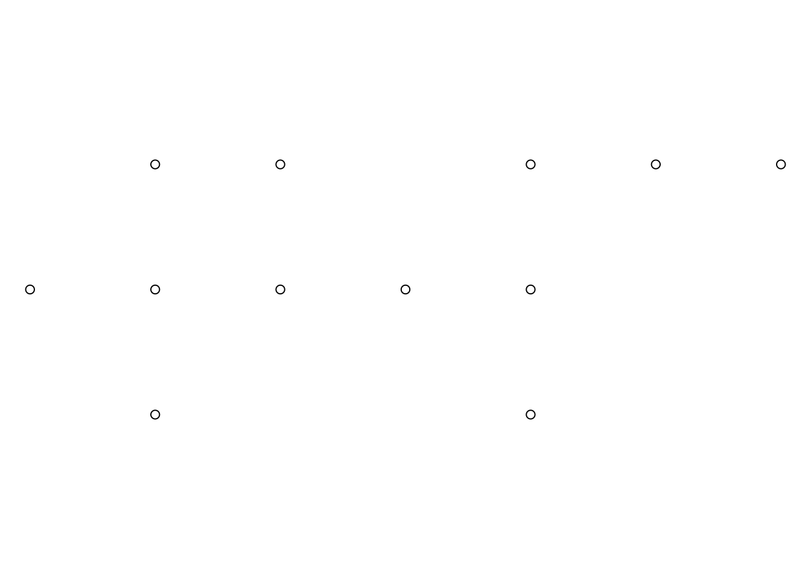
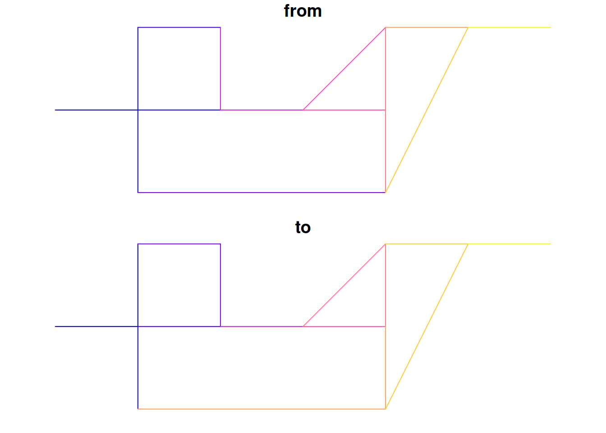
with_graph(edges, centrality_edge_betweenness())Error in `.register_graph_context()`:
! `graph` must be a <tbl_graph> object… and tidygraph does not know about space.
graph = tbl_graph(nodes, edges, directed = FALSE)set_margins()
plot(graph)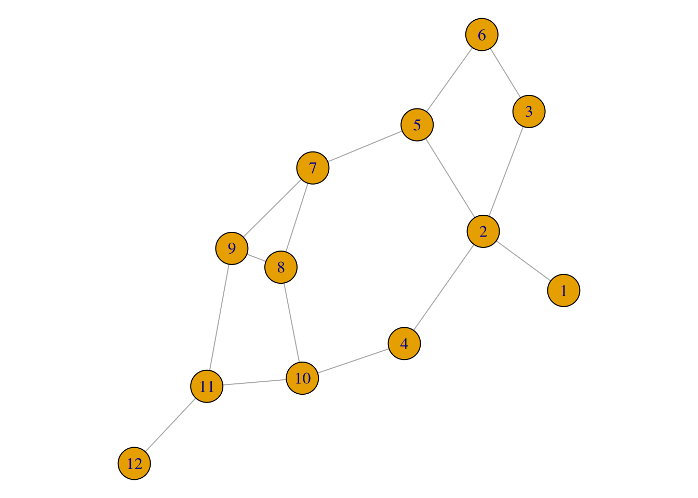
area = st_convex_hull(st_combine(edges[10:15, ]))graph |>
st_filter(area)Error in UseMethod("st_filter"): no applicable method for 'st_filter' applied to an object of class "c('tbl_graph', 'igraph')"Combining the power of the two lead to the birth of sfnetworks, a package for spatial network analysis in R.
net = sfnetwork(nodes, edges, directed = FALSE)→ Checking node geometry types ...✔ All nodes have geometry type POINT→ Checking edge geometry types ...✔ All edges have geometry type LINESTRING→ Checking coordinate reference system equality ...✔ Nodes and edges have the same crs→ Checking coordinate precision equality ...✔ Nodes and edges have the same precision→ Checking if geometries match ...✔ Node locations match edge boundaries✔ Spatial network structure is validset_margins()
plot(net)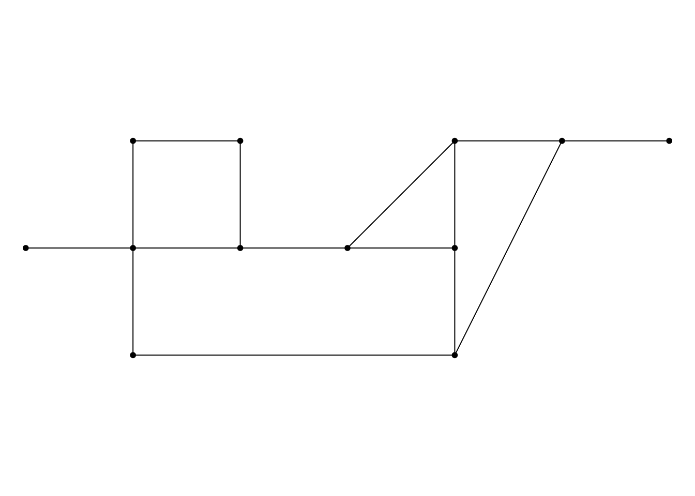
# Note: this computes the betweenness centrality without geographic weights.
# We will later see how to use geographic weights.
with_graph(net, centrality_edge_betweenness()) [1] 11.000000 10.000000 17.000000 12.666667 4.666667 17.000000 10.000000
[8] 19.000000 7.000000 12.000000 3.000000 7.666667 10.000000 12.000000
[15] 11.000000filtered = net |>
st_filter(area)set_margins()
plot(net)
plot(area, border = "orange", lwd = 2, lty = 4, add = TRUE)
plot(filtered)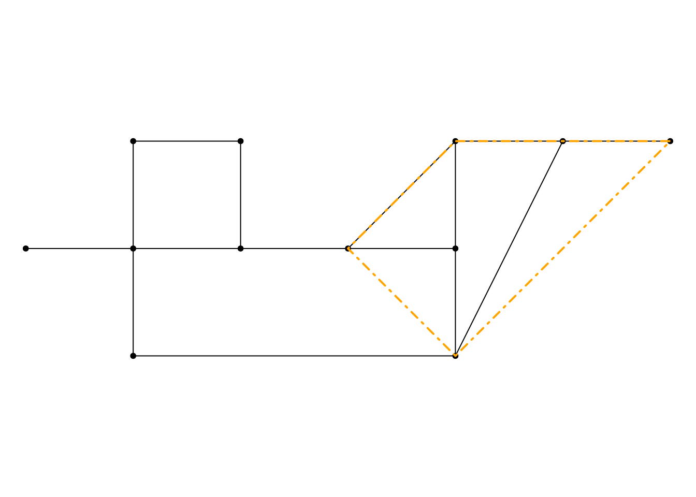
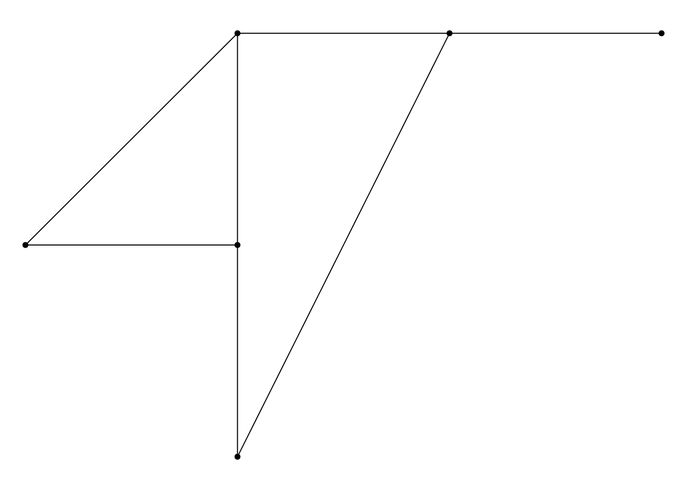
The sfnetworks ecosystem can be summarized as:

1.2 Content
1.2.1 Data structure
The sfnetwork data structure looks like a combination of an sf table for the nodes, and an sf table for the edges.
net# A sfnetwork: 12 nodes and 15 edges
#
# An undirected simple graph with 1 component and spatially explicit edges
#
# Dimension: XY
# Bounding box: xmin: 0 ymin: 0 xmax: 6 ymax: 2
# CRS: NA
#
# Node data: 12 × 1 (active)
geometry
<POINT>
1 (0 1)
2 (1 1)
3 (1 2)
4 (1 0)
5 (2 1)
6 (2 2)
# ℹ 6 more rows
#
# Edge data: 15 × 3
from to geometry
<int> <int> <LINESTRING>
1 1 2 (0 1, 1 1)
2 2 3 (1 1, 1 2)
3 2 4 (1 1, 1 0)
# ℹ 12 more rows
Just as with an sf object, we can assign it a coordinate reference system…
st_crs(net) = 22293
net# A sfnetwork: 12 nodes and 15 edges
#
# An undirected simple graph with 1 component and spatially explicit edges
#
# Dimension: XY
# Bounding box: xmin: 0 ymin: 0 xmax: 6 ymax: 2
# Projected CRS: Cape / Lo33
#
# Node data: 12 × 1 (active)
geometry
<POINT [m]>
1 (0 1)
2 (1 1)
3 (1 2)
4 (1 0)
5 (2 1)
6 (2 2)
# ℹ 6 more rows
#
# Edge data: 15 × 3
from to geometry
<int> <int> <LINESTRING [m]>
1 1 2 (0 1, 1 1)
2 2 3 (1 1, 1 2)
3 2 4 (1 1, 1 0)
# ℹ 12 more rows… and transform it to other coordinate reference systems.
net |>
st_transform(4326)# A sfnetwork: 12 nodes and 15 edges
#
# An undirected simple graph with 1 component and spatially explicit edges
#
# Dimension: XY
# Bounding box: xmin: 32.9998 ymin: -0.002658872 xmax: 32.99985 ymax: -0.002640784
# Geodetic CRS: WGS 84
#
# Node data: 12 × 1 (active)
geometry
<POINT [°]>
1 (32.99985 -0.002649828)
2 (32.99984 -0.002649828)
3 (32.99984 -0.002658872)
4 (32.99984 -0.002640784)
5 (32.99983 -0.002649828)
6 (32.99983 -0.002658872)
# ℹ 6 more rows
#
# Edge data: 15 × 3
from to geometry
<int> <int> <LINESTRING [°]>
1 1 2 (32.99985 -0.002649828, 32.99984 -0.002649828)
2 2 3 (32.99984 -0.002649828, 32.99984 -0.002658872)
3 2 4 (32.99984 -0.002649828, 32.99984 -0.002640784)
# ℹ 12 more rowsAlthough the structure looks like a container with two sf tables, it is not really. In fact, the sfnetwork class inherits the igraph class, a fully-fledged graph object.
class(net)[1] "sfnetwork" "tbl_graph" "igraph" 1.2.2 Creation
One of the most common ways to create a spatial network is to start with a set of spatial lines, and convert them into a network by adding nodes at the endpoints of the lines, with shared endpoints among multiple lines becoming a single node.
set_margins()
plot(st_geometry(roxel))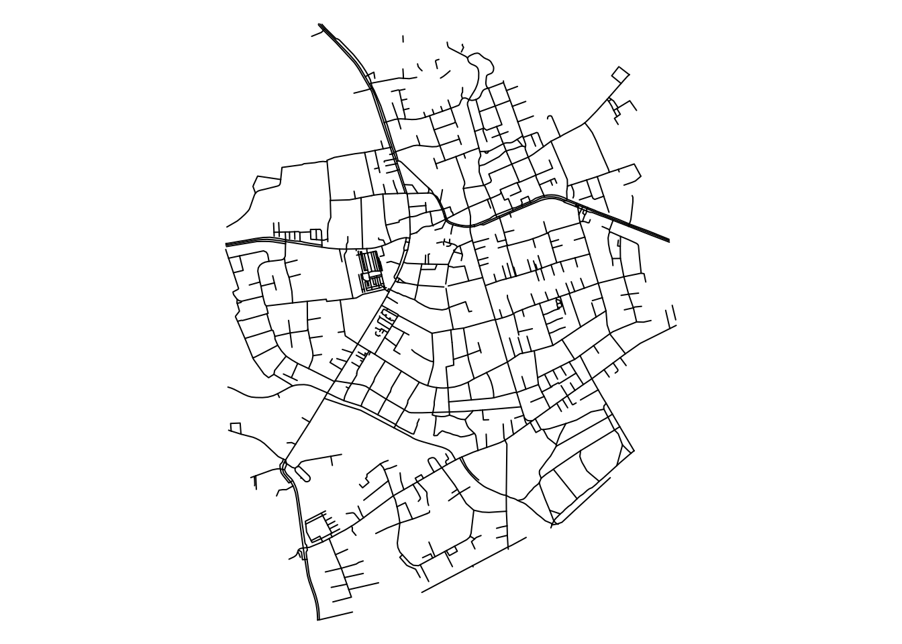
set_margins()
plot(as_sfnetwork(roxel))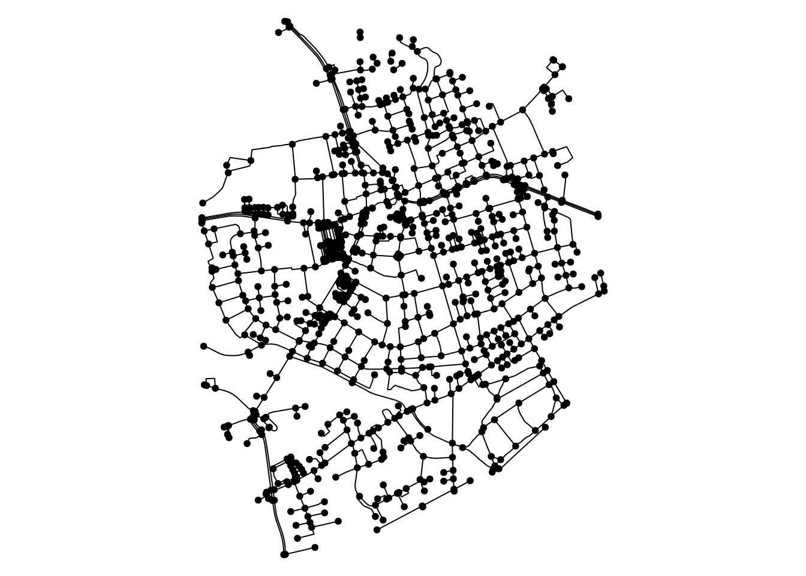
Another way is to start with a set of spatial points, and specify which of these points are connected to each other. You can do this by providing an adjacency matrix, but also by choosing from a pre-defined set of methods.
set_margins()
plot(st_geometry(mozart), pch = 20)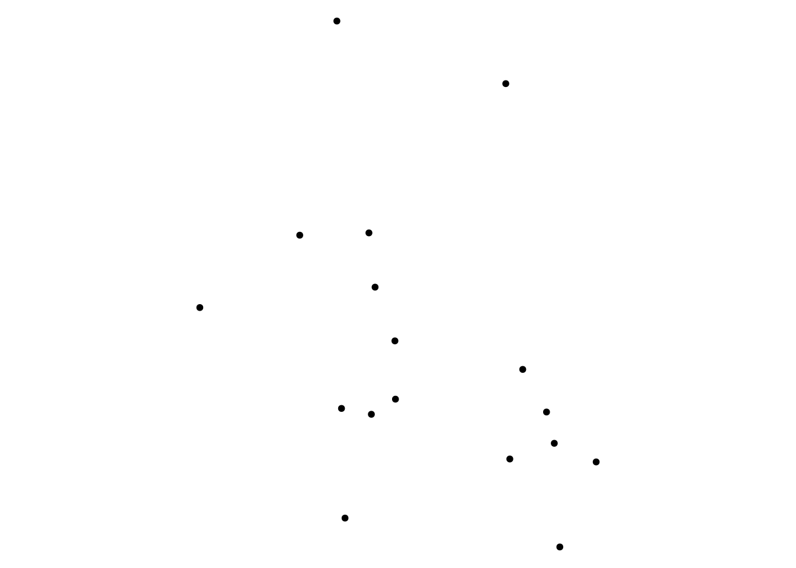
set_margins()
plot(as_sfnetwork(mozart, "complete"))
plot(as_sfnetwork(mozart, "sequence"))
plot(as_sfnetwork(mozart, "mst"))
plot(as_sfnetwork(mozart, "delaunay"))
plot(as_sfnetwork(mozart, "gabriel"))
plot(as_sfnetwork(mozart, "rn"))
plot(as_sfnetwork(mozart, "knn"))Warning in spdep::knn2nb(spdep::knearneigh(st_geometry(x), k = k), sym =
FALSE): neighbour object has 4 sub-graphsplot(as_sfnetwork(mozart, "knn", k = 3))Warning in spdep::knn2nb(spdep::knearneigh(st_geometry(x), k = k), sym =
FALSE): neighbour object has 2 sub-graphs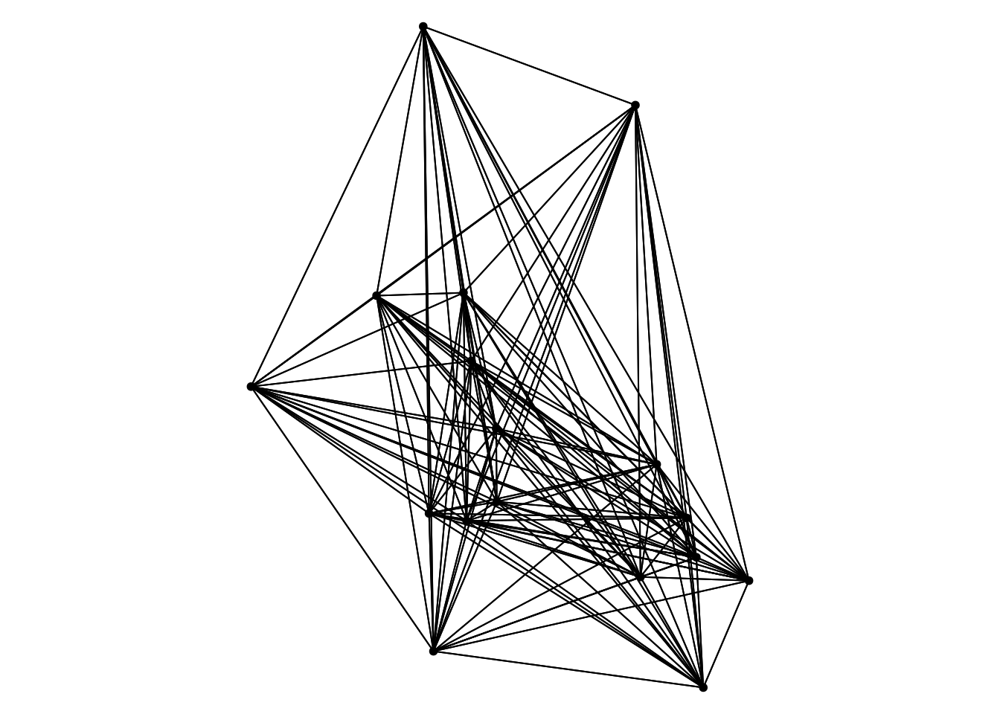
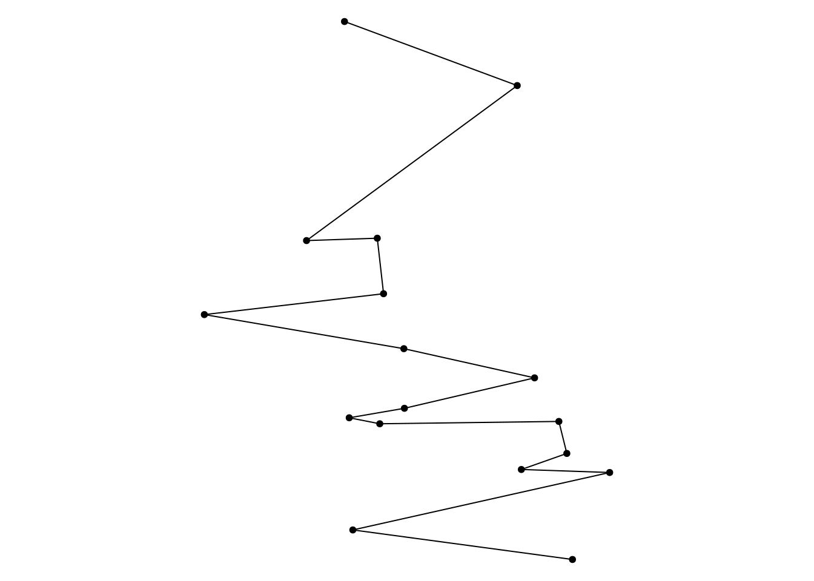
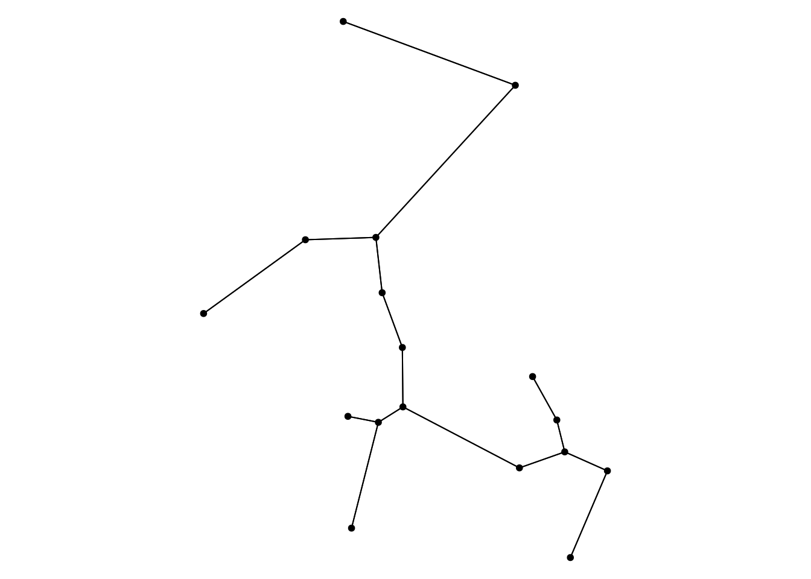
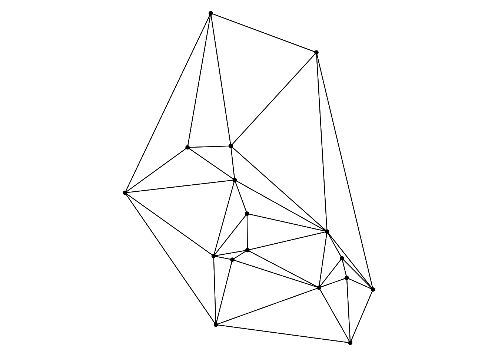
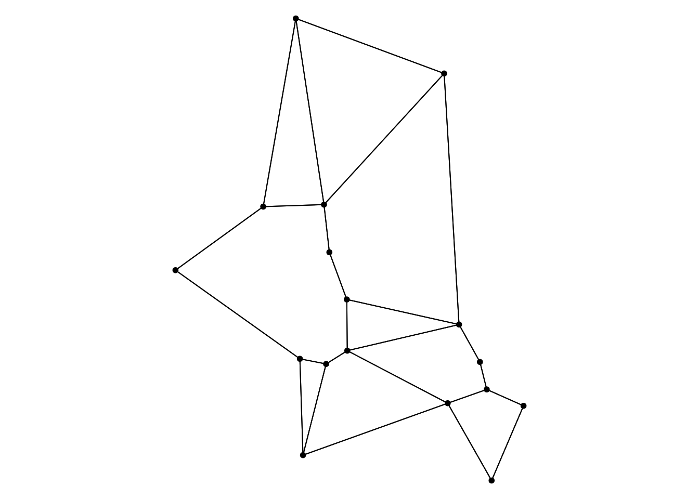
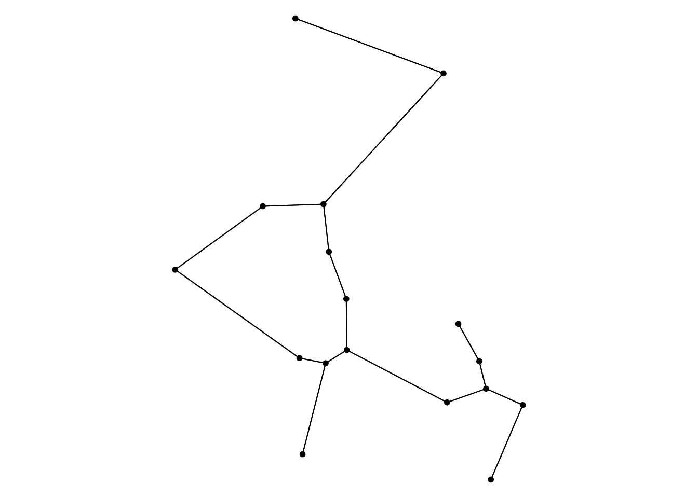
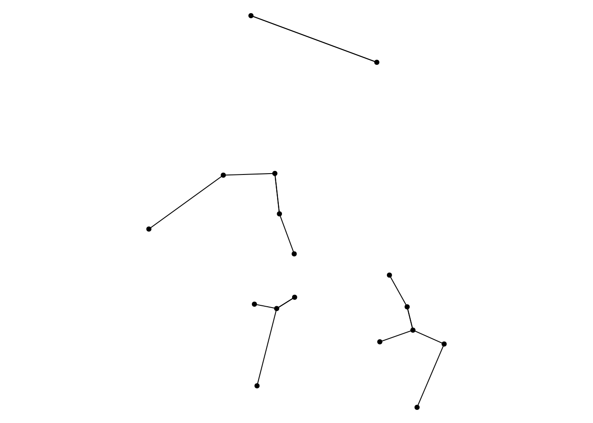
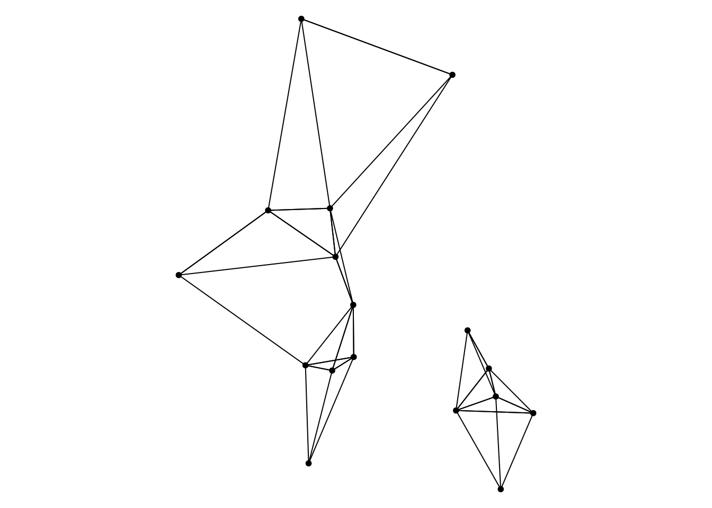
1.2.3 Tidy workflows
But don’t worry, thanks to tidygraph we can handle an sfnetwork object as if it was just a container with two sf tables. Hence, we simply apply our standard dplyr verbs to them for data wrangling. We just need to be explicit if we apply the verb to the nodes, or the edges. For this, tidygraph invented the activate() verb.
Now, you can use many dplyr verbs as you would on a regular sf table. Like mutate() …
net = net |>
activate(nodes) |>
mutate(keep_me = sample(c(TRUE, FALSE), n(), replace = TRUE)) |>
activate(edges) |>
mutate(
name = paste0("edge_", letters[1:n()]),
length = st_length(geometry)
)net… and select() …
Note
Note here that in the edges table the geometry column is not the only “sticky” column anymore. Also the from and to columns, that reference the nodes at each end of the edge, survive every select operation.
net |>
activate(edges) |>
select(length)# A sfnetwork: 12 nodes and 15 edges
#
# An undirected simple graph with 1 component and spatially explicit edges
#
# Dimension: XY
# Bounding box: xmin: 0 ymin: 0 xmax: 6 ymax: 2
# Projected CRS: Cape / Lo33
#
# Edge data: 15 × 4 (active)
from to length geometry
<int> <int> [m] <LINESTRING [m]>
1 1 2 1 (0 1, 1 1)
2 2 3 1 (1 1, 1 2)
3 2 4 1 (1 1, 1 0)
4 2 5 1 (1 1, 2 1)
5 3 6 1 (1 2, 2 2)
6 4 10 3 (1 0, 4 0)
# ℹ 9 more rows
#
# Node data: 12 × 2
geometry keep_me
<POINT [m]> <lgl>
1 (0 1) TRUE
2 (1 1) TRUE
3 (1 2) FALSE
# ℹ 9 more rows… and filter().
Note
Note here that when filtering the nodes table, the edges get filtered as well. This is because an edge in a network can by definition not exists without a node at both of its ends!
net |>
activate(nodes) |>
filter(keep_me)# A sfnetwork: 5 nodes and 3 edges
#
# An unrooted forest with 2 trees and spatially explicit edges
#
# Dimension: XY
# Bounding box: xmin: 0 ymin: 0 xmax: 4 ymax: 2
# Projected CRS: Cape / Lo33
#
# Node data: 5 × 2 (active)
geometry keep_me
<POINT [m]> <lgl>
1 (0 1) TRUE
2 (1 1) TRUE
3 (1 0) TRUE
4 (4 2) TRUE
5 (4 0) TRUE
#
# Edge data: 3 × 5
from to geometry name length
<int> <int> <LINESTRING [m]> <chr> [m]
1 1 2 (0 1, 1 1) edge_a 1
2 2 3 (1 1, 1 0) edge_c 1
3 3 5 (1 0, 4 0) edge_f 31.2.4 Network analysis
Since the sfnetwork class inherits the tbl_graph class, which itself inherits the igraph class, we can apply (almost) all of tidygraphs and igraphs network analysis functionalities to sfnetwork objects without the need for conversion.
For example, computing node degrees and inspecting the degree distribution …
net = net |>
activate(nodes) |>
mutate(degree = centrality_degree())net |>
activate(nodes) |>
st_as_sf() |>
ggplot() +
geom_bar(aes(x = degree)) +
theme_bw()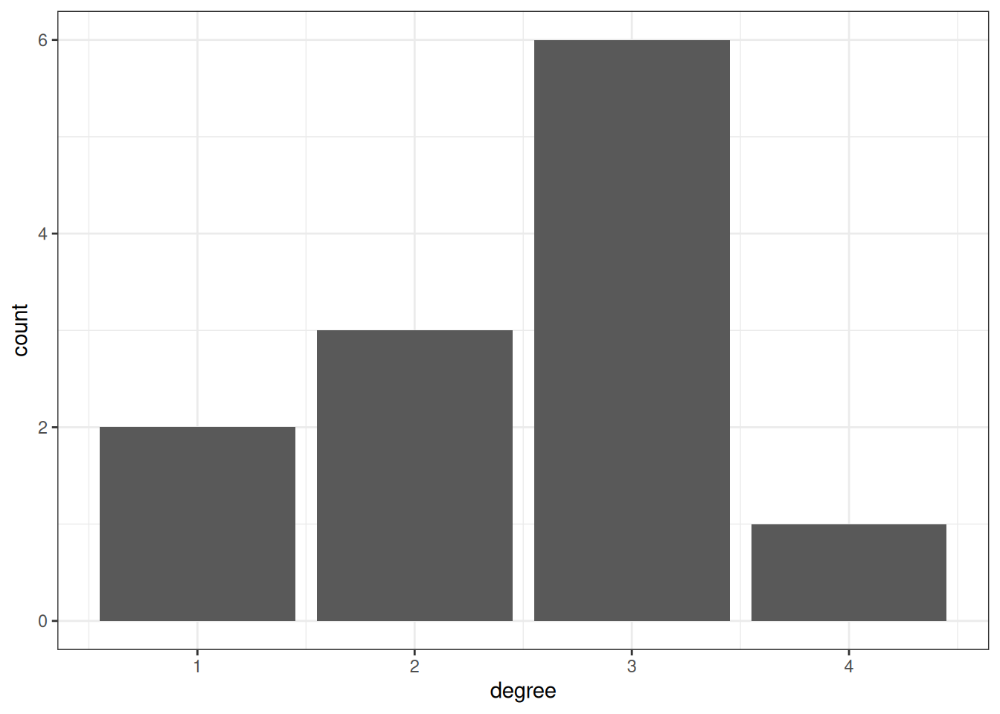
ggraph(net, "sf") +
geom_edge_sf() +
geom_node_sf(aes(size = degree)) +
theme_void()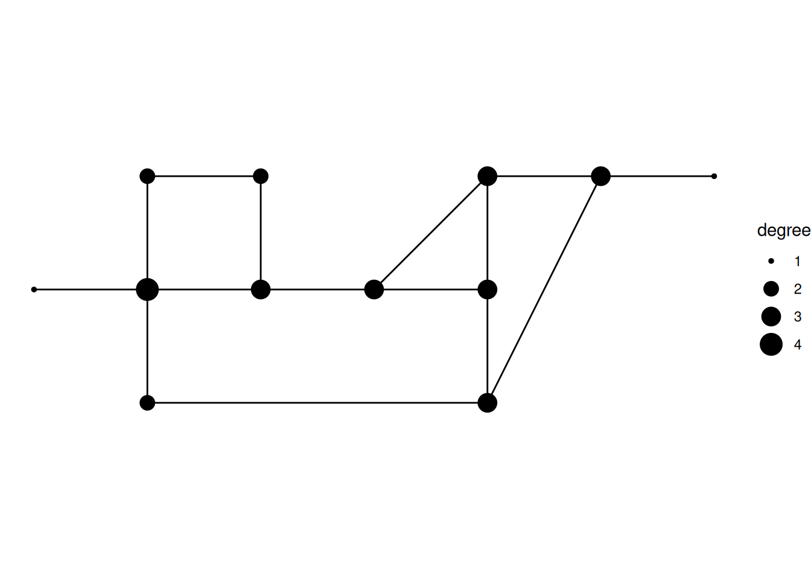
… or converting the network to its minimum spanning tree (the subset of edges that connects all the nodes, without cycles and with the minimum possible edge length) …
mst = net |>
convert(to_minimum_spanning_tree, weights = length)set_margins()
plot(mst)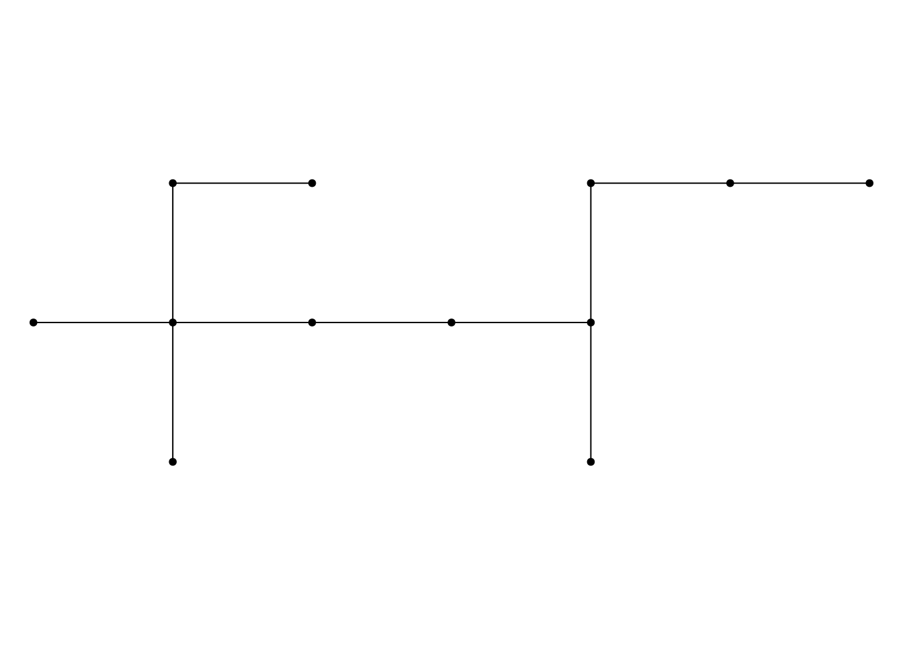
… or identify bridge edges (edges that will increase the number of connected components in the network when removed).
net = net |>
activate(edges) |>
mutate(is_bridge = edge_is_bridge())set_margins()
ggraph(net, "sf") +
geom_edge_sf(aes(color = is_bridge)) +
geom_node_sf() +
theme_void()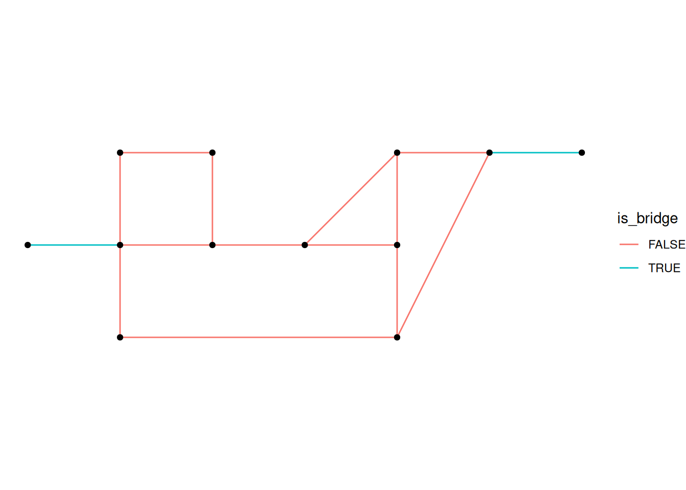
This was just a very small part of all the functions that tidygraph contains. There is much more which we will not go through here. See the tidygraph documentation.
Tip
If tidygraph does not provide a tidy interface for an igraph function, or you don’t like the way the interface is coded, you can also apply igraph functions directly to an sfnetwork object. Do note that when such a function returns a network, this will be an igraph object rather than a sfnetwork object, unless you call the function inside wrap_igraph().
1.2.5 Spatial analysis
In sfnetworks, we wrote methods for all sf functions that make sense to be applied to a network structure. Thanks to this, you can also apply these spatial analytical functions to sfnetwork objects without the need for conversion.
For example, a spatial filter …
poly = st_polygon(list(matrix(c(1.8,0.8,4.2,0.8,4.2,2.2,1.8,2.2,1.8,0.8), ncol = 2, byrow = TRUE))) |>
st_sfc(crs = st_crs(net))
net_filtered = net |>
activate(nodes) |>
st_filter(poly)set_margins()
plot(net, col = "grey")
plot(poly, border = "orange", lwd = 2, lty = 4, add = TRUE)
plot(net_filtered, lwd = 2, cex = 2, add = TRUE)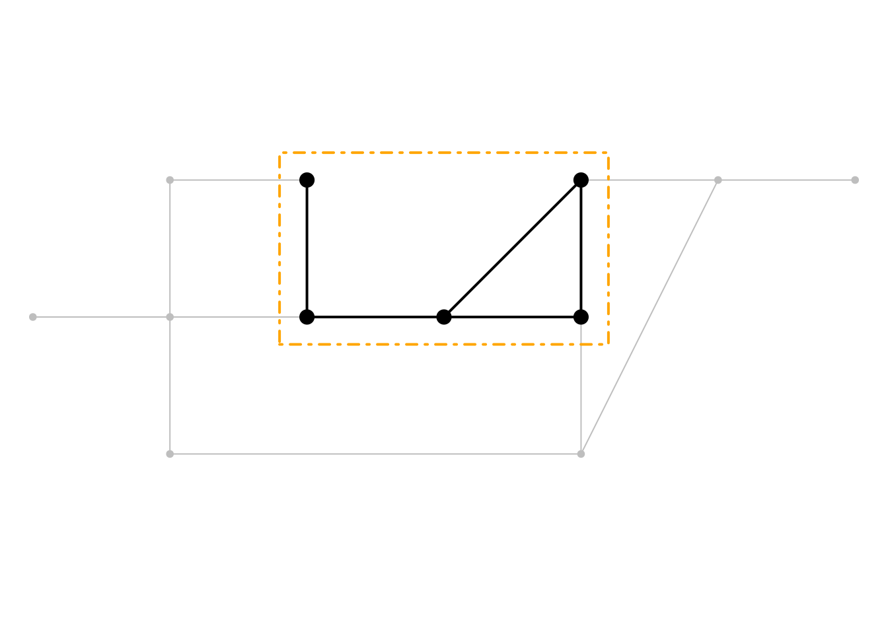
… or a spatial join …
poly1 = st_polygon(list(matrix(c(-0.2,-0.2,3.2,-0.2,3.2,2.2,-0.2,2.2,-0.2,-0.2), ncol = 2, byrow = TRUE))) |>
st_sfc(crs = st_crs(net))
poly2 = st_polygon(list(matrix(c(3.8,-0.2,6.2,-0.2,6.2,2.2,3.8,2.2,3.8,-0.2), ncol = 2, byrow = TRUE))) |>
st_sfc(crs = st_crs(net))
polys = st_sf(geometry = c(poly1, poly2)) |>
mutate(poly_id = c(1, 2))
net_joined = net |>
activate(nodes) |>
st_join(polys)net_joined# A sfnetwork: 12 nodes and 15 edges
#
# An undirected simple graph with 1 component and spatially explicit edges
#
# Dimension: XY
# Bounding box: xmin: 0 ymin: 0 xmax: 6 ymax: 2
# Projected CRS: Cape / Lo33
#
# Node data: 12 × 4 (active)
geometry keep_me degree poly_id
<POINT [m]> <lgl> <dbl> <dbl>
1 (0 1) TRUE 1 1
2 (1 1) TRUE 4 1
3 (1 2) FALSE 2 1
4 (1 0) TRUE 2 1
5 (2 1) FALSE 3 1
6 (2 2) FALSE 2 1
# ℹ 6 more rows
#
# Edge data: 15 × 6
from to geometry name length is_bridge
<int> <int> <LINESTRING [m]> <chr> [m] <lgl>
1 1 2 (0 1, 1 1) edge_a 1 TRUE
2 2 3 (1 1, 1 2) edge_b 1 FALSE
3 2 4 (1 1, 1 0) edge_c 1 FALSE
# ℹ 12 more rowsset_margins()
plot(st_geometry(net_joined, "edges"))
plot(st_geometry(polys)[1], border = "orange", lwd = 2, lty = 4, add = TRUE)
plot(st_geometry(polys)[2], border = "deepskyblue", lwd = 2, lty = 4, add = TRUE)
plot(select(st_as_sf(net_joined, "nodes"), poly_id), pal = c("orange", "deepskyblue"), pch = 20, cex = 2, add = TRUE)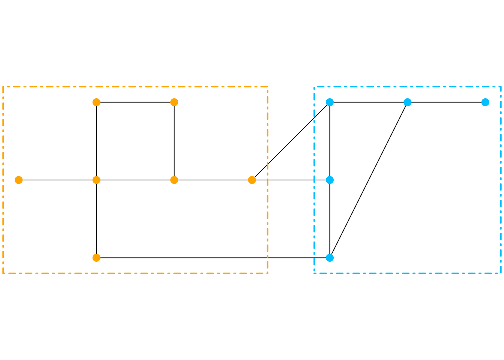
Also in this section we only showed a very small part of what sf can do and how this can be used on sfnetwork objects. There is much more which we will not go through here. See the sf documentation.
1.2.6 Spatial network analysis
Since sf does not know about networks and tidygraph does not know about space, neither of them offer functions that are specific to spatial networks. That is why it was not enough for sfnetworks to only combine the functionalities of the two “parent packages”. The system is more than the sum of its parts! We needed to extend the functionalities of sf and tidygraph with functions that implement operations which are specific to spatial network analysis.
One example is a process which we called “blending”: you snap a point to the nearest location on the network, subdivide the network at that location, and finally add the snapped point as a new node to the network.
p1 = st_sfc(st_point(c(0.5, 1.2)), crs = st_crs(net))
p2 = st_sfc(st_point(c(2.5, 0.3)), crs = st_crs(net))
points = st_sf(geometry = c(p1, p2)) |>
mutate(point_id = c("a", "b"))
blended_net = st_network_blend(net, points)Warning: `st_network_blend()` assumes all attributes are constant over geometries.
! Not all attributes are labelled as being constant.
ℹ You can label attribute-geometry relations using `sf::st_set_agr()`.set_margins()
plot(blended_net)
plot(points, pal = c("orange", "deepskyblue"), pch = 8, cex = 2, add = TRUE)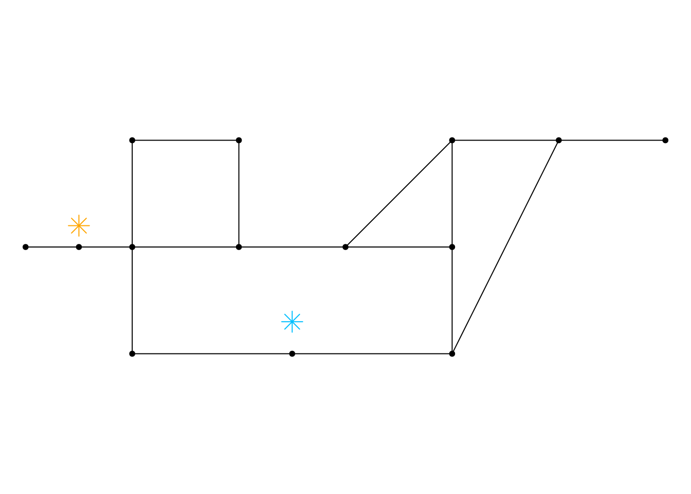
We can also compute several spatial measures for edges and nodes. For example, we can compute the geographic length of each edge. These may be longer than the euclidean distance between its source and target nodes, which is also called the displacement of the edge. The ratio between the two is known as the circuity. A related concept is the straightness centrality of nodes, which is calculated by first computing the ratios between length and displacement for the shortest paths between a node and all other nodes in the network, and the taking the average of those values.
net |>
activate(nodes) |>
mutate(sc = centrality_straightness()) |>
activate(edges) |>
mutate(length = edge_length(), dp = edge_displacement(), circuity = edge_circuity())# A sfnetwork: 12 nodes and 15 edges
#
# An undirected simple graph with 1 component and spatially explicit edges
#
# Dimension: XY
# Bounding box: xmin: 0 ymin: 0 xmax: 6 ymax: 2
# Projected CRS: Cape / Lo33
#
# Edge data: 15 × 8 (active)
from to geometry name length is_bridge dp circuity
<int> <int> <LINESTRING [m]> <chr> [m] <lgl> [m] <dbl>
1 1 2 (0 1, 1 1) edge_a 1 TRUE 1 1
2 2 3 (1 1, 1 2) edge_b 1 FALSE 1 1
3 2 4 (1 1, 1 0) edge_c 1 FALSE 1 1
4 2 5 (1 1, 2 1) edge_d 1 FALSE 1 1
5 3 6 (1 2, 2 2) edge_e 1 FALSE 1 1
6 4 10 (1 0, 4 0) edge_f 3 FALSE 3 1
# ℹ 9 more rows
#
# Node data: 12 × 4
geometry keep_me degree sc
<POINT [m]> <lgl> <dbl> <dbl>
1 (0 1) TRUE 1 0.892
2 (1 1) TRUE 4 0.936
3 (1 2) FALSE 2 0.806
# ℹ 9 more rowsA core task in spatial network analysis is shortest path calculations. This is something that is also relevant for standard networks, but tidygraph does not put a lot of emphasis on it.
path = st_network_paths(net, from = 1, to = 12)
pathSimple feature collection with 1 feature and 6 fields
Geometry type: LINESTRING
Dimension: XY
Bounding box: xmin: 0 ymin: 1 xmax: 6 ymax: 2
Projected CRS: Cape / Lo33
# A tibble: 1 × 7
from to node_path edge_path path_found cost geometry
<int> <int> <list> <list> <lgl> [m] <LINESTRING [m]>
1 1 12 <dbl [7]> <dbl [6]> TRUE 6.41 (0 1, 1 1, 2 1, 3 1, 4 2, 5 2…set_margins()
ggraph(net, "sf") +
geom_edge_sf(color = "grey50") +
geom_sf(data = path, color = "orange", linewidth = 1) +
geom_node_sf(color = "grey50", size = 2) +
theme_void()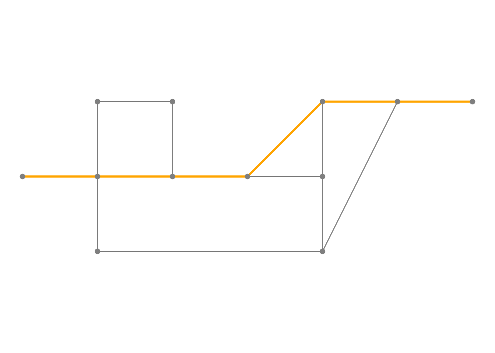
path = st_network_paths(net, from = 1, to = 12, weights = NA)set_margins()
ggraph(net, "sf") +
geom_edge_sf(color = "grey50") +
geom_sf(data = path, color = "orange", linewidth = 1) +
geom_node_sf(color = "grey50", size = 2) +
theme_void()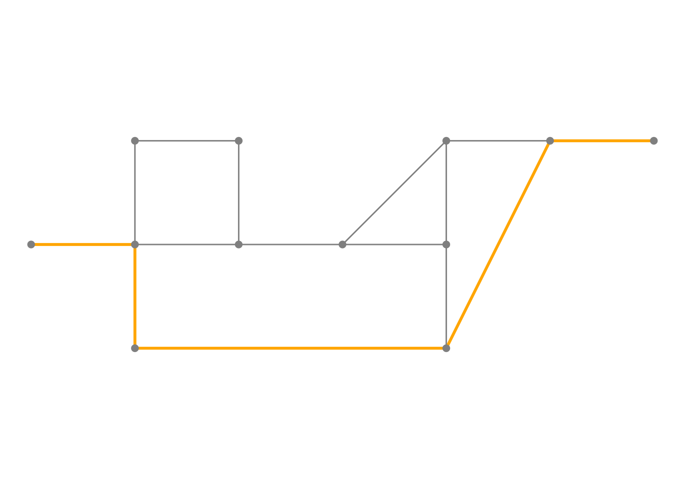
Additionally, sfnetworks lets you compute shortest paths between any pair of spatial points, by first snapping them to their nearest network node.
p1 = st_sfc(st_point(c(0, 1.2)), crs = st_crs(net))
p2 = st_sfc(st_point(c(5.6, 1.8)), crs = st_crs(net))
pts = st_sf(geometry = c(p1, p2))
path = st_network_paths(net, from = p1, to = p2, weights = "length")Warning: The `weights` argument of `evaluate_weight_spec()` uses tidy evaluation as of
sfnetworks v1.0.
ℹ This means you can forward column names without quotations, e.g. `weights =
length` instead of `weights = 'length'`. Quoted column names are currently
still supported for backward compatibility, but this may be removed in future
versions.
ℹ The deprecated feature was likely used in the sfnetworks package.
Please report the issue at
<https://github.com/luukvdmeer/sfnetworks/issues/>.set_margins()
ggraph(net, "sf") +
geom_edge_sf(color = "grey50") +
geom_sf(data = path, color = "orange", linewidth = 1) +
geom_node_sf(color = "grey50", size = 2) +
geom_sf(data = pts, color = "deepskyblue", pch = 8, size = 4) +
theme_void()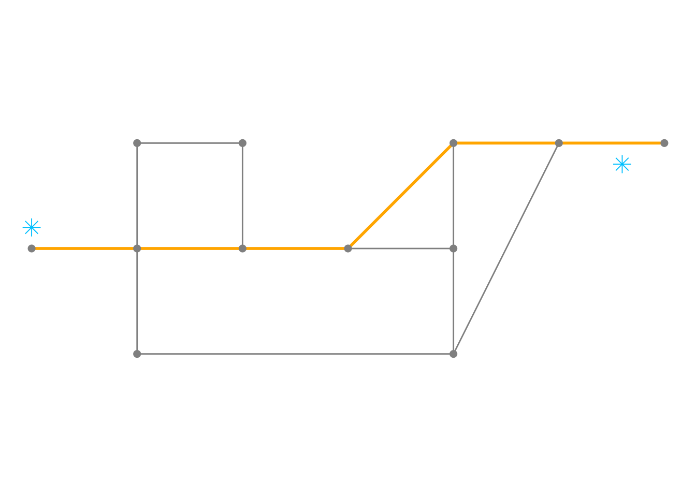
As a bridge to the next part on “Real-world networks”, we’ll show a subset of functions we implemented to clean a spatial network. Because real-world networks are rarely as clean as our beloved toy network.
Lets first create a very dirty toy network.
Code to create a dirty network for cleaning
p01 = st_point(c(0, 1))
p02 = st_point(c(1, 1))
p03 = st_point(c(2, 1))
p04 = st_point(c(3, 1))
p05 = st_point(c(4, 1))
p06 = st_point(c(3, 2))
p07 = st_point(c(3, 0))
p08 = st_point(c(4, 3))
p09 = st_point(c(4, 2))
p10 = st_point(c(4, 0))
p11 = st_point(c(5, 2))
p12 = st_point(c(5, 0))
p13 = st_point(c(5, -1))
p14 = st_point(c(5.8, 1))
p15 = st_point(c(6, 1.2))
p16 = st_point(c(6.2, 1))
p17 = st_point(c(6, 0.8))
p18 = st_point(c(6, 2))
p19 = st_point(c(6, -1))
p20 = st_point(c(7, 1))
l01 = st_sfc(st_linestring(c(p01, p02, p03)))
l02 = st_sfc(st_linestring(c(p03, p04, p05)))
l03 = st_sfc(st_linestring(c(p06, p04, p07)))
l04 = st_sfc(st_linestring(c(p08, p11, p09)))
l05 = st_sfc(st_linestring(c(p09, p05, p10)))
l06 = st_sfc(st_linestring(c(p08, p09)))
l07 = st_sfc(st_linestring(c(p10, p12, p13, p10)))
l08 = st_sfc(st_linestring(c(p05, p14)))
l09 = st_sfc(st_linestring(c(p15, p14)))
l10 = st_sfc(st_linestring(c(p16, p15)))
l11 = st_sfc(st_linestring(c(p14, p17)))
l12 = st_sfc(st_linestring(c(p17, p16)))
l13 = st_sfc(st_linestring(c(p15, p18)))
l14 = st_sfc(st_linestring(c(p17, p19)))
l15 = st_sfc(st_linestring(c(p16, p20)))
lines = c(
l01, l02, l03, l05, l06,
l04, l07, l08, l09, l10,
l11, l12, l13, l14, l15
)
dirty = as_sfnetwork(lines)set_margins()
plot(dirty)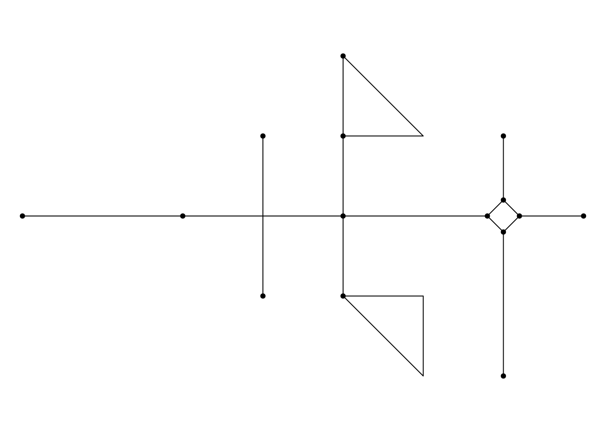
simple = convert(dirty, to_spatial_simple)
sub = convert(simple, to_spatial_subdivision)
smooth = convert(sub, to_spatial_smooth)
clean = convert(smooth, to_spatial_contracted, group_spatial_dbscan(0.5))set_margins()
plot(simple)
plot(sub)
plot(smooth)
plot(clean)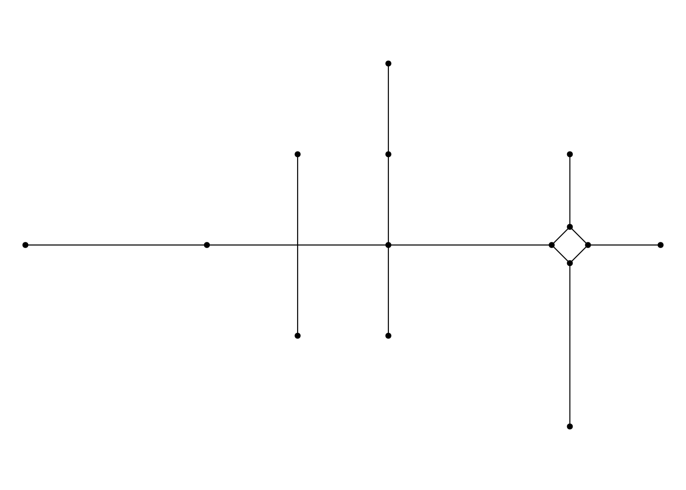
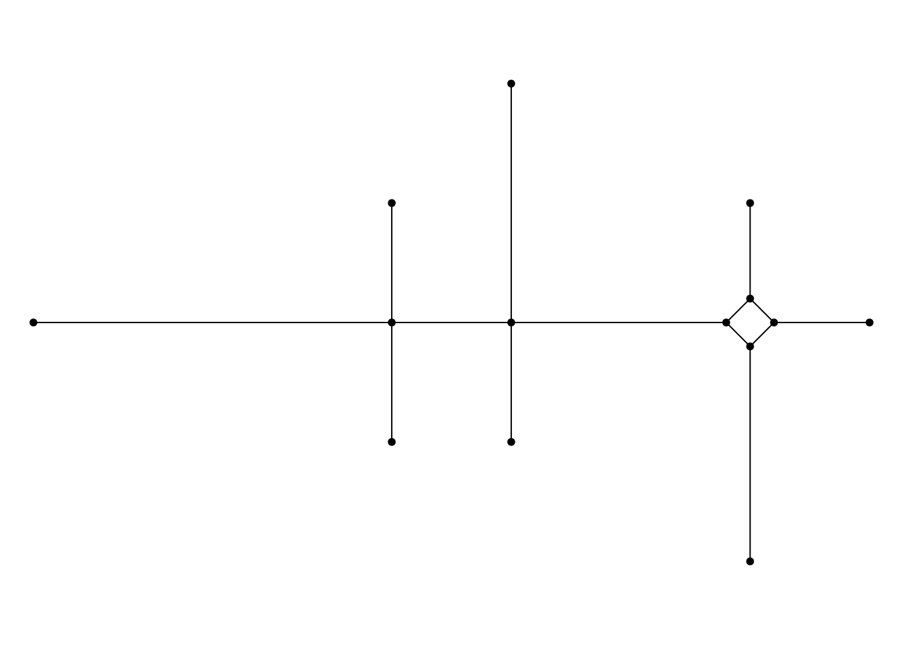
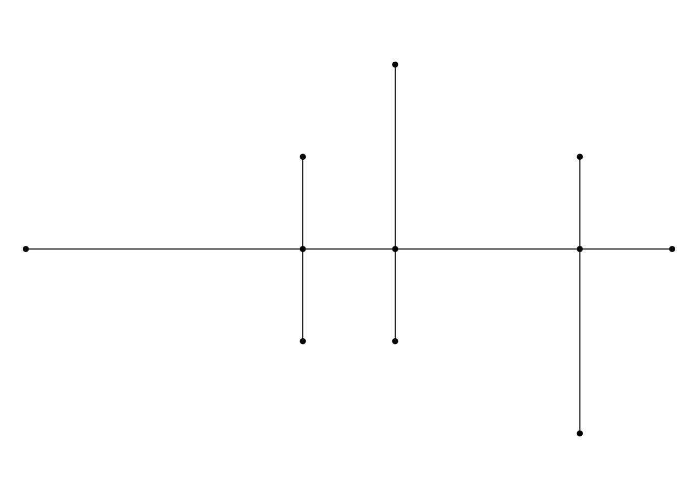
set_margins()
plot(clean)Also in this section, we only showed a subset of function that sfnetworks added on top of the existing sf and tidygraph functions. There is much more which we will not go through here. See the sfnetworks documentation.